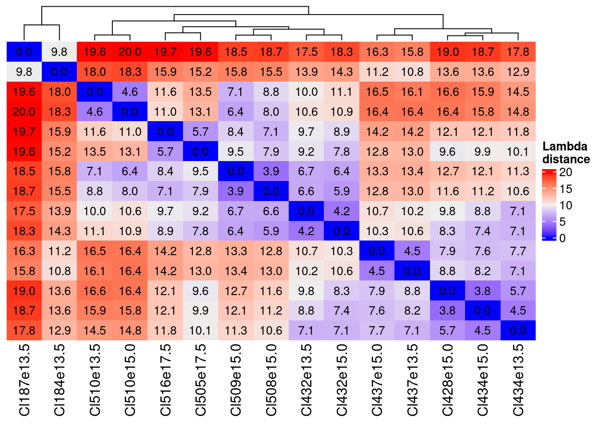
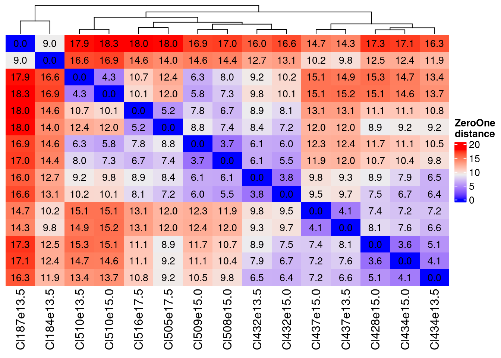
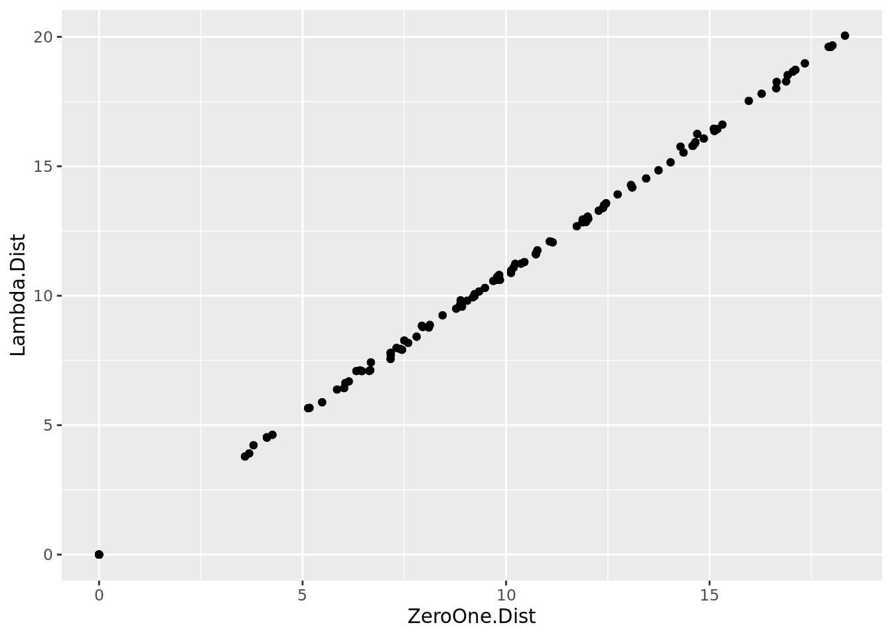

library(COTAN)
library(stringr)
library(tidyverse)Original Clusters Distance Evaluation
Extract the row matrix for each cluster
This is done on the La Manno Mouse Brain dataset (2021)
E13.5
E13.5Clusters.code <- c(432,187,434,184,437,510)
fb135Obj <- readRDS(file = file.path("Data/MouseCortexFromLoom/", "e13.5_ForebrainDorsal.cotan.RDS"))
sampleCondition <- getMetadataElement(fb135Obj, datasetTags()[["cond"]])
for (cl in E13.5Clusters.code) {
cells <- names(getClusters(fb135Obj,
clName = "original.clusters")[getClusters(fb135Obj,
clName = "original.clusters") == cl])
CLRawData <- getRawData(fb135Obj)[,cells]
saveRDS(CLRawData,file = paste0("Data/MouseCortexFromLoom/SingleClusterRawData/Cl",cl,sampleCondition,"RawData.RDS"))
}E15.0
E15.0Clusters.code <- c(432,509,510,508,428,434,437)
fb150Obj <- readRDS(file = file.path("Data/MouseCortexFromLoom/", "e15.0_ForebrainDorsal.cotan.RDS"))
sampleCondition <- getMetadataElement(fb150Obj, datasetTags()[["cond"]])
for (cl in E15.0Clusters.code) {
cells <- names(getClusters(fb150Obj,
clName = "original.clusters")[getClusters(fb150Obj,
clName = "original.clusters") == cl])
CLRawData <- getRawData(fb150Obj)[,cells]
saveRDS(CLRawData,file = paste0("Data/MouseCortexFromLoom/SingleClusterRawData/Cl",cl,sampleCondition,"RawData.RDS"))
}E17.5
E17.5Clusters.code <- c(516,505)
fb175Obj <- readRDS(file = file.path("Data/MouseCortexFromLoom/", "E17.5_ForebrainDorsal.cotan.RDS"))
sampleCondition <- getMetadataElement(fb175Obj, datasetTags()[["cond"]])
for (cl in E17.5Clusters.code) {
cells <- names(getClusters(fb175Obj,
clName = "original.clusters")[getClusters(fb175Obj,
clName = "original.clusters") == cl])
CLRawData <- getRawData(fb175Obj)[,cells]
saveRDS(CLRawData,file = paste0("Data/MouseCortexFromLoom/SingleClusterRawData/Cl",cl,sampleCondition,"RawData.RDS"))
}Defining the two distances
To roughly determine the cluster distances we decided to test two simple Euclidean distances:
over the mean of the 0/1 raw matrix
over the \(1-e^{-\lambda}\) where \(\lambda\) is the average expression for the genes.
ClFiles <- list.files("Data/MouseCortexFromLoom/SingleClusterRawData/")
tot.Df.ZeroOne <- NA
tot.Df.Lambda <- NA
for(Fl in ClFiles) {
print(Fl)
cl <- str_split(Fl,pattern = "_",simplify = T)[1]
data <- readRDS(paste0("Data/MouseCortexFromLoom/SingleClusterRawData/",
Fl))
obj <- COTAN(data)
ZeroOne <- rowMeans(as.matrix(getZeroOneProj(obj)))
tot.Df.ZeroOne <- merge(tot.Df.ZeroOne,ZeroOne,by = 0,all = T)
tot.Df.ZeroOne[is.na(tot.Df.ZeroOne)] <- 0
colnames(tot.Df.ZeroOne)[ncol(tot.Df.ZeroOne)] <- cl
tot.Df.ZeroOne <- column_to_rownames(tot.Df.ZeroOne,var = "Row.names")
obj <- estimateLambdaLinear(obj)
Lambda <- getLambda(obj)
tot.Df.Lambda <- merge(tot.Df.Lambda,1-exp(-Lambda),by = 0, all = T)
tot.Df.Lambda[is.na(tot.Df.Lambda)] <- 0
colnames(tot.Df.Lambda)[ncol(tot.Df.Lambda)] <- cl
tot.Df.Lambda <- column_to_rownames(tot.Df.Lambda,var = "Row.names")
}
tot.Df.Lambda <- tot.Df.Lambda[,2:ncol(tot.Df.Lambda)]
tot.Df.ZeroOne <- tot.Df.ZeroOne[,2:ncol(tot.Df.ZeroOne)]
tot.Df.Lambda <- tot.Df.Lambda[2:nrow(tot.Df.Lambda),]
tot.Df.ZeroOne <- tot.Df.ZeroOne[2:nrow(tot.Df.Lambda),]
head(tot.Df.Lambda)
head(tot.Df.ZeroOne)saveRDS(tot.Df.Lambda, "Data/MouseCortexFromLoom/ClustersDistances/Tot.Df.Lambda.RDS")
saveRDS(tot.Df.ZeroOne, "Data/MouseCortexFromLoom/ClustersDistances/Tot.Df.ZeroOne.RDS")library(ComplexHeatmap)
distance.df.Lambda <- as.matrix(dist(t(tot.Df.Lambda),diag = T,upper = T))
Heatmap(distance.df.Lambda,
name = "Lambda\ndistance",
cell_fun = function(j, i, x, y, width, height, fill)
{
grid.text(sprintf("%.1f", distance.df.Lambda[i, j]), x, y, gp = gpar(fontsize = 10))
},
show_row_dend = F,
show_row_names = F)
distance.df.ZeroOne <- as.matrix(dist(t(tot.Df.ZeroOne),diag = T,upper = T))
Heatmap(distance.df.ZeroOne,
name = "ZeroOne\ndistance",
cell_fun = function(j, i, x, y, width, height, fill)
{
grid.text(sprintf("%.1f", distance.df.ZeroOne[i, j]), x, y, gp = gpar(fontsize = 10))
},
show_row_dend = F,
show_row_names = F)
The distances are very similar with the Zero One a little lower as values…
distance.df.Lambda.Plot <- rownames_to_column(as.data.frame(distance.df.Lambda),
var = "Cl.1")
distance.df.Lambda.Plot <-pivot_longer(distance.df.Lambda.Plot,
cols = !Cl.1,
names_to = "Cl.2",
values_to = "Lambda.Dist")
distance.df.ZeroOne.Plot <- rownames_to_column(as.data.frame(distance.df.ZeroOne),
var = "Cl.1")
distance.df.ZeroOne.Plot <-pivot_longer(distance.df.ZeroOne.Plot,
cols = !Cl.1,
names_to = "Cl.2",
values_to = "ZeroOne.Dist")
distance.df.Tot <- merge(distance.df.ZeroOne.Plot,distance.df.Lambda.Plot,by= c("Cl.1","Cl.2"),all=T)
ggplot(as.data.frame(distance.df.Tot),aes(x=ZeroOne.Dist, y=Lambda.Dist))+geom_point()
So for what we are using it is the same.
The key information is that we can define couple of, in one case, triplets of very near clusters:
- Cl510e13.5 and Cl510e15.0
- Cl516e17.5 and Cl505e17.5
- Cl509e15.0 and Cl508e15.0 which are also similar to Cl432e13.5 and Cl432e15.0
- Cl432e13.5 and Cl432e15.0
- Cl437e13.5 and Cl437e15.0
- Cl428e15.0, Cl434e15.0 and Cl434e13.5
Based on these distances we can consider three thresholds (with number of cluster pair):
less than 7 (first quartile)
sum(distance.df.ZeroOne < 7.1 & distance.df.ZeroOne > 0)/2[1] 19between 9 and 11 (around median)
sum(distance.df.ZeroOne > 9 & distance.df.ZeroOne < 11)/2[1] 20more than 13 (3rd quartile)
sum(distance.df.ZeroOne > 13)/2[1] 32
sessionInfo()R version 4.3.2 (2023-10-31)
Platform: x86_64-pc-linux-gnu (64-bit)
Running under: Ubuntu 20.04.6 LTS
Matrix products: default
BLAS: /usr/lib/x86_64-linux-gnu/blas/libblas.so.3.9.0
LAPACK: /usr/lib/x86_64-linux-gnu/lapack/liblapack.so.3.9.0
locale:
[1] LC_CTYPE=C.UTF-8 LC_NUMERIC=C LC_TIME=C.UTF-8
[4] LC_COLLATE=C.UTF-8 LC_MONETARY=C.UTF-8 LC_MESSAGES=C.UTF-8
[7] LC_PAPER=C.UTF-8 LC_NAME=C LC_ADDRESS=C
[10] LC_TELEPHONE=C LC_MEASUREMENT=C.UTF-8 LC_IDENTIFICATION=C
time zone: Europe/Rome
tzcode source: system (glibc)
attached base packages:
[1] grid stats graphics grDevices utils datasets methods
[8] base
other attached packages:
[1] ComplexHeatmap_2.16.0 lubridate_1.9.2 forcats_1.0.0
[4] dplyr_1.1.2 purrr_1.0.1 readr_2.1.4
[7] tidyr_1.3.0 tibble_3.2.1 ggplot2_3.4.2
[10] tidyverse_2.0.0 stringr_1.5.0 COTAN_2.3.0
loaded via a namespace (and not attached):
[1] RcppAnnoy_0.0.21 splines_4.3.2
[3] later_1.3.1 polyclip_1.10-4
[5] fastDummies_1.7.3 lifecycle_1.0.3
[7] doParallel_1.0.17 globals_0.16.2
[9] lattice_0.22-5 MASS_7.3-60
[11] dendextend_1.17.1 magrittr_2.0.3
[13] plotly_4.10.2 rmarkdown_2.24
[15] yaml_2.3.7 httpuv_1.6.11
[17] Seurat_5.0.0 sctransform_0.4.1
[19] spam_2.10-0 askpass_1.2.0
[21] sp_2.1-1 spatstat.sparse_3.0-2
[23] reticulate_1.34.0 cowplot_1.1.1
[25] pbapply_1.7-2 RColorBrewer_1.1-3
[27] abind_1.4-5 Rtsne_0.16
[29] BiocGenerics_0.46.0 circlize_0.4.15
[31] IRanges_2.34.1 S4Vectors_0.38.1
[33] ggrepel_0.9.3 irlba_2.3.5.1
[35] listenv_0.9.0 spatstat.utils_3.0-3
[37] umap_0.2.10.0 goftest_1.2-3
[39] RSpectra_0.16-1 spatstat.random_3.2-1
[41] dqrng_0.3.0 fitdistrplus_1.1-11
[43] parallelly_1.36.0 DelayedMatrixStats_1.22.5
[45] leiden_0.4.3 codetools_0.2-19
[47] DelayedArray_0.26.7 tidyselect_1.2.0
[49] shape_1.4.6 farver_2.1.1
[51] ScaledMatrix_1.8.1 viridis_0.6.4
[53] matrixStats_1.1.0 stats4_4.3.2
[55] spatstat.explore_3.2-1 jsonlite_1.8.7
[57] GetoptLong_1.0.5 ellipsis_0.3.2
[59] progressr_0.14.0 ggridges_0.5.4
[61] survival_3.5-7 iterators_1.0.14
[63] foreach_1.5.2 tools_4.3.2
[65] ica_1.0-3 Rcpp_1.0.11
[67] glue_1.6.2 gridExtra_2.3
[69] xfun_0.39 MatrixGenerics_1.12.3
[71] ggthemes_4.2.4 withr_2.5.0
[73] fastmap_1.1.1 fansi_1.0.4
[75] openssl_2.1.0 digest_0.6.33
[77] rsvd_1.0.5 timechange_0.2.0
[79] parallelDist_0.2.6 R6_2.5.1
[81] mime_0.12 colorspace_2.1-0
[83] Cairo_1.6-1 scattermore_1.2
[85] tensor_1.5 spatstat.data_3.0-1
[87] utf8_1.2.3 generics_0.1.3
[89] data.table_1.14.8 httr_1.4.6
[91] htmlwidgets_1.6.2 S4Arrays_1.2.0
[93] uwot_0.1.16 pkgconfig_2.0.3
[95] gtable_0.3.3 lmtest_0.9-40
[97] htmltools_0.5.5 dotCall64_1.1-0
[99] clue_0.3-64 SeuratObject_5.0.0
[101] scales_1.2.1 png_0.1-8
[103] knitr_1.43 rstudioapi_0.15.0
[105] tzdb_0.4.0 reshape2_1.4.4
[107] rjson_0.2.21 nlme_3.1-163
[109] zoo_1.8-12 GlobalOptions_0.1.2
[111] KernSmooth_2.23-22 parallel_4.3.2
[113] miniUI_0.1.1.1 RcppZiggurat_0.1.6
[115] pillar_1.9.0 vctrs_0.6.3
[117] RANN_2.6.1 promises_1.2.0.1
[119] BiocSingular_1.16.0 beachmat_2.16.0
[121] xtable_1.8-4 cluster_2.1.4
[123] evaluate_0.21 zeallot_0.1.0
[125] cli_3.6.1 compiler_4.3.2
[127] rlang_1.1.1 crayon_1.5.2
[129] future.apply_1.11.0 labeling_0.4.2
[131] plyr_1.8.8 stringi_1.8.1
[133] viridisLite_0.4.2 deldir_1.0-9
[135] BiocParallel_1.34.2 assertthat_0.2.1
[137] munsell_0.5.0 lazyeval_0.2.2
[139] spatstat.geom_3.2-4 PCAtools_2.14.0
[141] Matrix_1.6-2 RcppHNSW_0.5.0
[143] hms_1.1.3 patchwork_1.1.2
[145] sparseMatrixStats_1.12.2 future_1.33.0
[147] shiny_1.7.5 ROCR_1.0-11
[149] Rfast_2.1.0 igraph_1.5.1
[151] RcppParallel_5.1.7